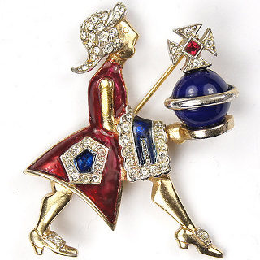
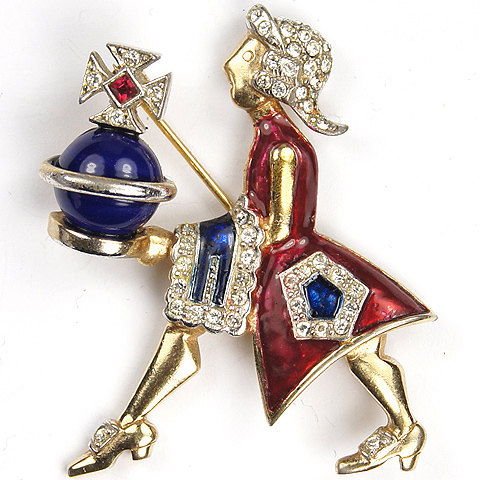

The best way to manage tool configuration
Courtier is a multi-tenant configuration system for Ruby. Elegant in it's simplicty, easy to use, yet flexible, Courtier can configure all your tools in a single file.
Finding Resources
Getting Started
Getting started with Courtier is easy.
$ gem install courtier
Then add the rc bootstrap feature to your systems RUBYOPT environment variable.
$ export RUBYOPT="-rc $RUBYOPT"
You will want to add this to you start up scripts, depending on your system that
will be .bashrc or .profile, or what have you.
Now you can specify tool configurations in your project's Config.rb file.
config 'qed', profile: 'coverage' do
require 'simplecov'
SimpleCov.start do
coverage_dir('log/coverage')
end
end
When the tool is run, with the coresponding profile, the configuration will be applied.
$ profile=coverage qed
© Rubyworks 2011 ·